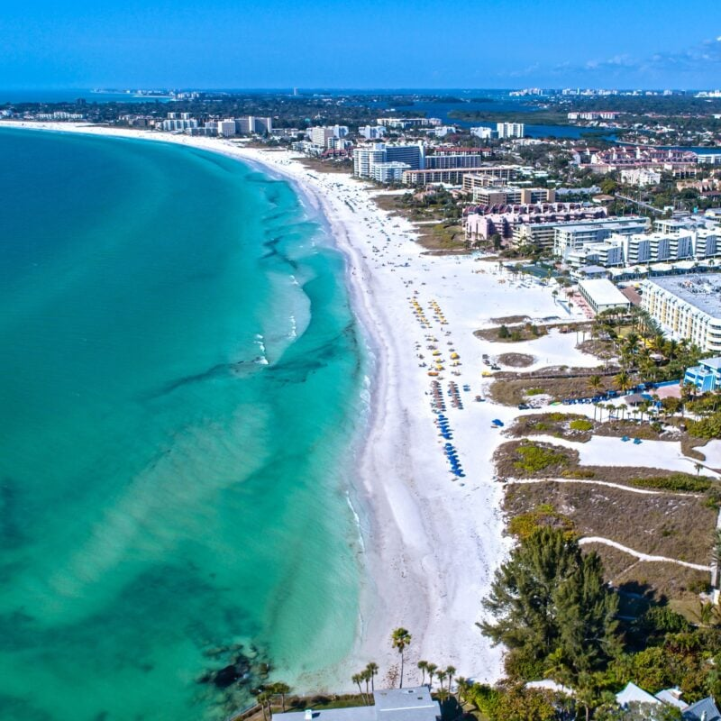
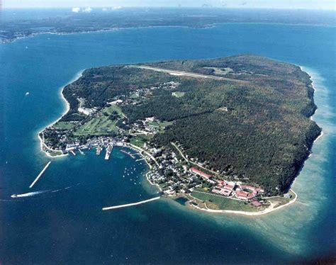

Siesta Key, FL
Siesta Key is known for its white sand beaches and is a nice spot to relax.
Park City, UT

Park City has great views of the mountains and nature.
The conditions for skiing and and snowboarding are excellent as well.
Mackinac Island, MI
Mackinac Island is known for not allowing and motor vehicles on the island.
This makes the island a very unique location to visit and makes a great experience.